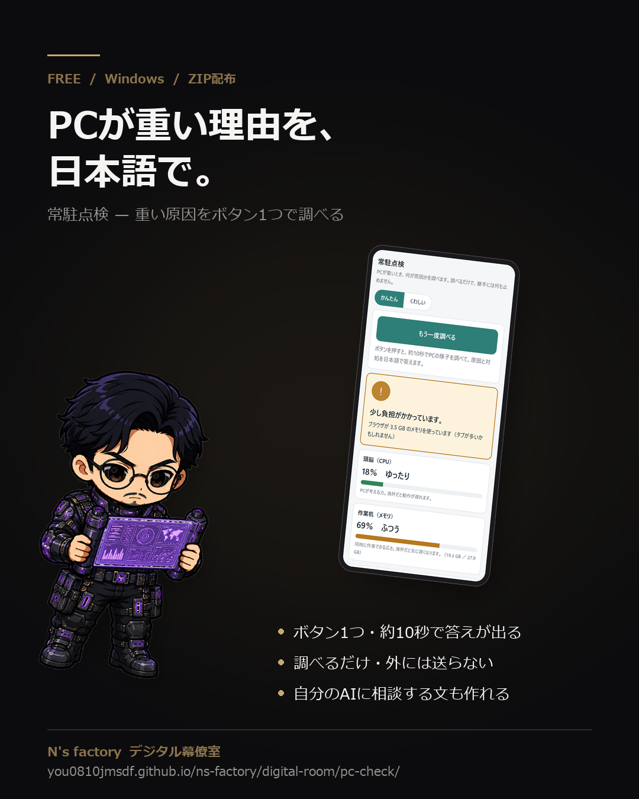

常駐点検 — PCが重い原因を、日本語で調べる
パソコンが重いとき、ボタンを1つ押すと、約10秒で「何が原因か」と「どうすればいいか」を日本語で答えます。 あなたのパソコンの中だけで動き、調べた内容をインターネットに送ることはありません。 調べるだけで、勝手に何かを止めたり設定を変えたりはしません。

何をするものか
Windows の「タスク マネージャー」は、数字と英語の名前が並ぶだけで、何が悪いのかまでは教えてくれません。 このツールは、動いているプログラムを約10秒ながめて、重くしている原因を順位つきで、 「どういうこと？」「どうすればいい？」の言葉で示します。
- 答えは 緑・黄・赤 の3色。赤なら、上から順に対処すれば軽くなります。
- よく見かけるプログラム（ブラウザ・OneDrive・Office・セキュリティソフトなど）には、日本語の「名札」と説明が付きます。
- 「○○を止める」ボタンは、1回押すと確認の表示になり、もう一度押すまで止まりません。
- ふだんは「かんたん」表示のままで大丈夫です。「くわしい」に切り替えると、プログラムの一覧が出ます。
こういう人に向いています
- 「最近パソコンが重い」けれど、何が原因か分からない
- タスク マネージャーを開いても、英語の名前ばかりで手が止まる
- 家族や知り合いのパソコンを見てあげることがある（フォルダごと渡せます）
- 見慣れないプログラムの正体を、ふだん使っている AI に聞きたい
逆に、向いていません
- ウイルスを探したい人（ウイルス対策ソフトの代わりにはなりません）
- Mac・スマホの人（Windows 専用です）
- 自動で何かを直してほしい人（このツールは調べるだけです。止めるかどうかは、あなたが決めます）
動作要件
| 必須 | Windows 10 または 11（PowerShell 5.1 は Windows に最初から入っています） |
|---|---|
| 必須 | ブラウザ（Edge・Chrome など。ページは自分のパソコンの中だけで開きます） |
| 不要 | インストール・管理者権限・アカウント登録 |
| 不要 | 追加のソフト・費用 |
使い方（3ステップ）
- ZIP を右クリック →「すべて展開」。展開したフォルダの中の
常駐点検.batをダブルクリックします。 - 画面の下に小さな窓が出て、ブラウザが開きます。「PCが重い原因を調べる」を押して、約10秒待ちます。
- 答えの下の「どういうこと？」「どうすればいい？」の通りにします。保存していない作業があるときは、先に保存してください。
終わるときは、ブラウザのページを閉じるだけで大丈夫です。10分たつと裏のしくみも自動で終わります。
緑 … いまは快適です 黄 … 少し負担がかかっています 赤 … 重くしている原因が見つかりました
自分の AI に相談する（おすすめ）
このツールは「何が重いか」を名前で示しますが、見慣れないプログラムが何者か、止めてよいかまでは答えません。 そこで、ふだん使っている AI（ChatGPT・Claude・Gemini など）に点検結果を渡して、その先を会話で聞けるようにしてあります。
- AI はあなたのパソコンの中を見られません。このツールが「目」になり、AI が「説明役」になります。
- やり方：答えが出たあと、ページの「🤖 自分の AI に相談する」の「AI に相談する文をコピー」を押す → AI のチャット欄に貼る → 「これは何？」「止めていい？」と続けて聞けます。
- AI に渡るのは、診断の結果と、動いているプログラムの名前・使っている量などです。パスワードなどは
***に、あなたのユーザー名は「〈ユーザー〉」に置き換えてあります。貼る前に全文を確認でき、渡すかどうかはあなたが決めます。 - AI は何も止めません。止めるのは、このページの「止める」ボタンだけです。
- 費用は、あなたが使っている AI の料金だけです。このツールにお金はかかりません。
AI に直接つなぐ（MCP・詳しい人向け）
MCP（AI アプリに道具をつなぐ共通の決まり）に対応した AI アプリ（Claude Desktop・Claude Code・Codex・Gemini CLI・Cursor など）なら、
コピーして貼らなくても、「PC が重い。調べて」と言うだけで AI が自分で点検結果を読みに来ます。
同梱の AI設定を表示.bat をダブルクリックすると、AI アプリに貼る設定が表示されます。
AI ができるのは「調べる」「1つのプログラムの詳しい情報を見る」の2つだけで、止めることはできません。
手順は ZIP の中の「はじめにお読みください.txt」にあります。
正直にお伝えすること
初めて開くとき、Windows が「PC が保護されました」と警告することがあります。
インターネットからもらったファイルには、Windows がこの警告を出します。このツールは、中身がすべて文字で読める小さなプログラムです。 展開する前に ZIP を右クリック →「プロパティ」→ 下の方の「許可する」にチェック → OK で出なくなります。 それでも出るときは「詳細情報」→「実行」を押してください。信頼できる場所から受け取ったファイルだけで行ってください。
- ウイルスを見つけるツールではありません。ウイルス対策ソフトの代わりにはなりません。
- 「止める」を押すと、そのプログラムは強制的に終わります。保存していないデータは失われます。
- 何のプログラムか分からないものは止めないでください。「止められません」「―」と出ているものは、止めると困るものです。
- 名札が付くのは、よく見かけるソフトだけです。付いていないプログラムは「自分の AI に相談する」で聞くのが近道です。
- もっと細かく調べたい人は、Microsoft の無料ツール「Process Explorer」を入れておくと、「くわしい」表示から開けます（英語版のみ）。
中身
| 常駐点検.bat | これをダブルクリックします |
|---|---|
| proc_check.ps1 | 調べる本体（文字で読めます） |
| page_template.html | 画面のひな形 |
| 常駐台帳_標準.json | 一般的なソフトの名札と説明（自分で書き足せます） |
| 常駐台帳.json | 自分用の名札（空です） |
| proc_check_mcp.ps1 | AI アプリにつなぐ部品（MCP を使う人だけ・文字で読めます） |
| AI設定を表示.bat | AI アプリに貼る設定を表示します（MCP を使う人だけ） |
| はじめにお読みください.txt | 使い方・注意・AI との使い方 |
お願いと免責
- このツールは調べて示すだけのものです。プログラムを止める・設定を変えるなどの操作は、ご自身の判断と責任でお願いします。
- 改変・個人利用はご自由にどうぞ。再配布や販売はご遠慮ください。
- 無料での配布のため、個別のサポートはお約束できません。不具合に気づいたら こちらの連絡先 まで教えていただけると助かります。
もともとは、自分のパソコンが重くなった朝に「タスク マネージャーでは原因が分からない」と困って作ったものです。 同じ困りごとの人に使ってもらえるよう、名札を一般的なソフトに広げて公開しました。